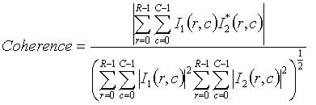

GCP Selection Operator
The GCP Selection operator is a component of coregistration.
Image co-registration is an essential step for Interferometry SAR
(InSAR) imaging. It aligns one or more slave images with a master image
in such a way that the each pixel from the co-registered
slave image represents the same point on the Earth surface as its
corresponding pixel in the master image.
The co-registration is
accomplished through two major processing steps: GCP selection and WARP. In GCP selection, a set of uniformly spaced Ground Control Points
(GCPs) in
the master image are generated first, then their corresponding
GCPs in the slave image are computed.
In WARP processing step, these GCP pairs are used to construct a WARP
distortion function,
which establishes a map between pixels in the master and slave images.
With the WARP function computed, the co-registered image is
generated by mapping the slave image pixels onto master image.
This
operator computes slave GCPs by coarse registration or coarse and
fine registrations depending on the input images are real or complex.
For real input images, coarse registration is performed, while for
complex images both coarse and fine registrations are performed. The
fine registration uses the image coherence technique to further
increase the precision of the GCPs.
Coarse Registration
The coarse
registration is achieved using a cross correlation operation
between the images on a series of imagettes defined across the images.
The major processing steps are listed as the follows:
- For a given master GCP, find initial slave GCP using geographical position information of GCP.
- Determine the imagettes surrounding the master and slave GCPs using user selected coarse registration window size.
- Compute new slave GCP position by performing cross-correlation of the master
and slave imagettes.
- If the row or column shift
of the new slave GCP from the previous position is no less than user
selected GCP tolerance and the maximum number of iteration is not reached, then move the slave imagette to the new GCP
position and go back to step 3. Otherwise, save the new slave GCP and
stop.
Those GCPs, for which the maximum number of iterations has been reached
or its final GCP shift is still greater than the tolerance, are
eliminated as invalid GCPs.
Fine Registration
The additional fine registration for complex images is achieved
by maximizing of the complex coherence between the images at a series
of imagettes defined across the images. It is assumed the coarse registration has been performed before this operation.
Some major processing steps are given below:
- For each given master-slave GCP pair, get complex imagettes
surrounding the master and slave GCPs using user selected coarse
registration window size.
- Compute initial coherence of the two imagettes.
-
Start from the initial slave GCP position, the best sub-pixel
shift of slave GCP is computed such that the slave imagette at the new
GCP position gives the maximum coherence with the master imagette. Powell's method is used in the optimization [1].
This processing step is optional for complex image co-registration and
user can skip it by uncheckmarking the "Apply fine Registration" box in
the dialog box.
Coherence Computation
Given master imagette I1 and slave imagette I2, there are two ways to compute the coherence of the two complex imagettes.
- Method 1: Let I1 and I2 be RxC imagettes and denote by I*2 the complex conjugate of I2. Then the coherence is computed by

- Method 2: The coherence is computed with a 3x3 (user can change the size) sliding window in two steps:
- First
for each pixel in the imagette, a 3x3 window centered at the pixel is
determined for both master and slave imagettes, and coherence is
computed for the two windows using equation above.
- Average coherences computed for all pixels in the imagette to get the final coherence for the imagette.
User can select the method to use by selecting radio button "Compute Coherence with Sliding Window".
Parameters Used
The parameters used by the Operator are as follows:
- Number of GCPs: The total number of GCPs used for the co-registration.
- Coarse Registration Window Width: The window width for cross-correlation in
coarse GCP selection. It must be power of 2.
- Coarse Registration Window Height: The window height for cross-correlation
in coarse GCP selection. It must be power of 2.
- Row Interpolation Factor: The row upsampling factor used in cross correlation operation.
It must be power of 2.
- Column Interpolation Factor: The column upsampling factor used in cross correlation operation. It must be power of 2.
- Max Iterations: The maximum number of iterations for computing coarse
slave GCP position.
- GCP Tolerance: The stopping criterion for slave GCP selection.
- Apply fine Registration: Checkbox indicating applying fine registration for complex image co-registration.
- Coherence Window Size: The dimension of the sliding window used in coherence computation.
- Coherence Threshold: Only GCPs with coherence above this threshold will be used
in co-registration.
- Fine Registration Window Width: The window width for coherence calculation in
fine GCP selection. It must be power of 2.
- Fine Registration Window Height: The window height for coherence calculation in
fine GCP selection. It must be power of 2.
- Compute Coherence with Sliding Window: If selected, sliding window with dimension
given in 9 will be used in coherence computation. Otherwise, coherence will be
computed directly from all pixel in the Fine Registration Window without using sliding
window.

Reference:
[1] William H. Press, Brian P. Flannery, Saul A. Teukolsky, Willaim
T. Vetterling, Numerical Recipes in C: The Art of Scientific Computing, second
eidition, 1992